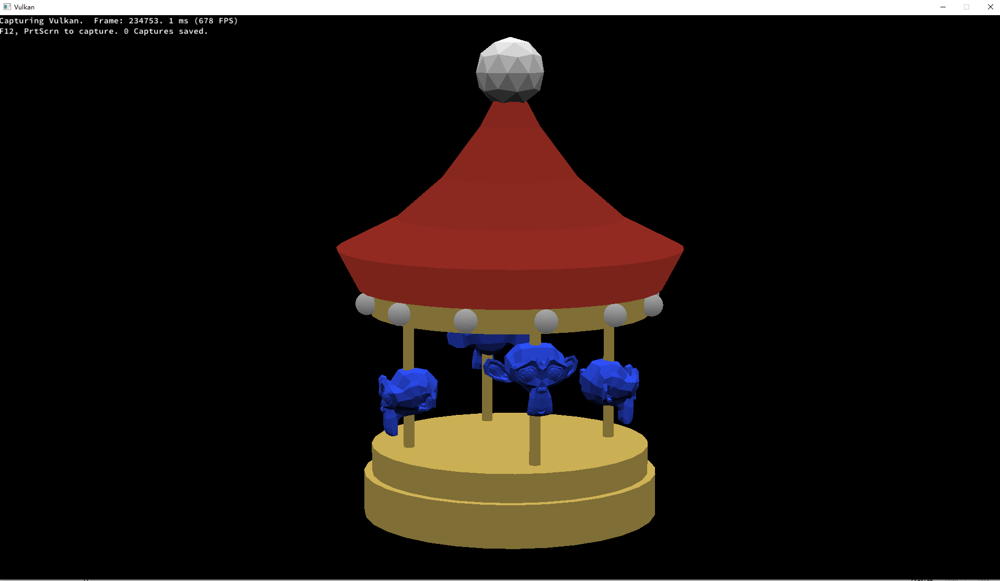
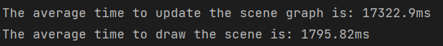

This program separates the assignment into three parts. The first is parsing the s72 file into several nodes. The second part is using the nodes to construct a scene graph.
Finally, the program visualizes the scene graph data using the Vulkan API. The program has all the functionalities the assignment requires. There are many modules like the headless event handlers, the animation handlers, and the frustum culling.
The program has three running modes: OnWindow, Headless, and PerformanceTest. The OnWindowOnWindow mode renders the result to a GLFW window. The Headless mode reads a event file and process
all its event off-screen. The PerformanceTest mode is also headless, but instead of reading an event, it runs some specific tests.
The scene and the animations were created in Blender, and they were exported as s72 and b72 files. (RotatingSuzanne.s72 and all related b72s) The scene is a rotating Suzanne merry-go-round, and the meshes are from the Blender's default.
When parsing the s72 file, the parser stores the animations as the nodes with the type "DRIVER." When constructing the scene graphs, those nodes
becomes the Driver objects which have all the data in the nodes. Those driver instances will be stored separately in the s72Helper instance.
When playing the animation, the program iterates through all the driver instances and get their current value. Later when updating the scene
graph, it will update their corresponding nodes' transform.
To run the program, you need to run the "bin/viewer.exe" with command line arguments.
NOTE 1: If the executable is not generated. type "node Maekfile.js" to make a build.
NOTE 2: If you are on a Windows machine, you need to change the path of the GLFW in the Maekfile.js
--scene scene.s72 -- required -- Load scene from scene.s72 NOTE: All its b72 files should be at the same path as the s72 file. --camera name -- optional -- Choose a specific camera to show the scene. If not provide a name, it will use the default user camera. --physical-device name -- optional -- Choose a specific physical device to rener the scene. If not provide, it will use the first satisfied device it found. --drawing-size w h --optional -- Set the display window or the image with a specific size. It not provide, it will be 1920 and 1080. --culling name --optional -- Set the culling mode when rendering the scene. It has two options: "none" and "frustum". It not provide, it will be "none". --headless events --optional -- If using a headless mode, it will read the input event file and prcess all the event actions off-screen. --performance-test count --optional -- Do the off-screen performance test. Count refers to the number of iterations. More detail below.
I implemented my own math classes within the namespace XZMath. It has three classes which are vec3, quat, and mat4.
They are all std arrays or 2d std arrays of floats. (May switch to templates later)
I've implemented all the necessary functions for each class. e.g. Constructors, Overload operators. And I've also implemented all the necessary computation functions like the dot product and the transformations.
NOTE: mat4 is a row-major four-by-four matrix, and all its calculations are also row-major.
The window and the swapchain are created depends on the running mode. It only creates a GLFW in the OnWindow mode.
OnWindow: Before the vulkan is initialized, it creates a GLFW window with all necessary setup.
Later when creating the vulkan instance, it creates a surface and link to the GFLW window, and it also creates the swap chain.
Headless: This mode does not have a surface and a Vulkan swapchain. The "swapchain" here becomes a list of VkImages.
The Vulkan API will directly render the result to the images.
The vulkan resource's creation and destruction follows the instruction's pattern, It will do all the creations before the main loop,
and do all the destructions after the main loop.
Parse JSON: Parsing the JSON file uses a recursive & stack approach. The program loads the whole file into a string. It then removes all the space and unnecessary characters in the string.
Next, it recursively goes through all the JSON objects and its children.
Each JSON object will become a ParserNode object which is a variant of string, float, vector, and map. The string refers to the string type of the object. The float refers to the number type of the object.
The vector refers to the array type of the JSON object. The map refers to the object type of the JSON object.
Process Nodes: In this section, the program analyzes the JSON nodes and form the scene graph.
It first finds the SCENE node since it is the root of the scene graph. Then it constructs the scene graph recursively. e.g. It will replace the children's index with the reference of the ParserNode.
While creating the scene graph, it will also create the Mesh, Camera, Driver objects and store them separately in the s72Helper.
The Mesh object is the basic unit to draw a mesh, so on the Vulkan side, each mesh object has its own vertex buffer and maybe its own index buffer.
It also has a list of mat4 which represents the transform matrices of all the instances. (Later in the optimization section, they will become mesh instances)
There is an Uniform Buffer which has all the MVP data for the mesh instances. and they are located based on the offsets.
When updating the scene graph, it will recursively traverse the whole tree structure with a transform matrix on the current node. That is, when going to a new node, a matrix will be updated with the node's transform data.
Moreover, it will recreate all the meshes' instance lists: it clears all the instance lists at the beginning, and while traversing to a mesh, it will add the transform matrix to the mesh's instance list.
Then on the Vulkan side when recording the command buffer, it will loop through each mesh in the mesh list and bind the mesh data to the pipeline dynamically.
For each instance of the current mesh, it will update the MVP matrix in the Uniform Buffer and do a draw call. (Will switch to instance rendering in the optimization section)
All the scenes will have a default camera which is the User-Camera; it is a flying camera so that the user can move around in the scene.
It has all the based movements like move forward and backward, rotate to a specific direction along an axis.
If the program receives an input, it updates the current camera's view matrix by recalculating the position and direction.
NOTE: The rotation along an axis is using a Euler Angle Rotation, may switch to a Quaternion Rotation in the further development to avoid the Gimbal Lock issue.
I use the Frustum Culling method in this program; the algorithm is inspired and refered from https://bruop.github.io/improved_frustum_culling/.
I retyped the code with a few math class and program oriented optimizations. This algorithm detects collision using the Separating Axis Theorem.
Each Mesh object has a AABB bounding box. To form the AABB box, the program reads the mesh's src b72 file, record the min/max vertex position on each axis.
When doing the culling, it will pass the camera info, the mesh's AABB info, and the instance's tranform matrix into the function,
to compute if the instance is culled or not. NOTE: The culling does not apply to the Debug-Camera, and the Debug-Camera will show the User-Camera's uclling result.
User Camera:
Debug Camera:
Each Driver object will have all the information in the DRIVER node. All the Drivers are stored in a vector list in the s72Helper instance.
The s72Instance also has a variable indicates the start time-step of the animation.
If playing the animation, the program keeps doing the traversal and updating the instances. When iterating each node, it checks if it has a moving driver.
If it has, given the duration (current time-step minus the start time-step), the driver instance returns the value(tranlation,rotation,or scale) on that time.
The program later will use that new data to compute the transform matrix for that node.
std::variant<XZM::vec3, XZM::quat> GetCurrentValue(float currTime) is the function to get the value from a given time.
Within the function, it will first find which mode it is using (STEP,LERP, or SLERP), and then it will call its corresponding function to do the calculations.
If the user choose to use the headless mode, the program will not create the GLFW window, the Vulkan surface, and the Vulkan swapchain.
But instead it lets the swapchain to be a vector of Vkimages. And the result is directly rendered to the images.
If the user wants to store the render result, the data in the Vkimage will be copied to a PPM file. NOTE: Since the image usage is local-bit, doing the copy needs to go through a staging buffer which may lead to some extra cost.
The program also provides the functionalities to process a event file. It will parse the event into a EventNode data structure and store all the nodes in a container.
When running the code, it will use a clock to track the current time step and the last time step, and it will use a Sliding Window to process all the actions within the period.
When doing the bottleneck testing, I found that my program got struggled with doing the multi-instance rendering. (More details in the bottleneck testing section below).
Thus, I decided to switch to the instanced rendering. I move the model matrix out of the uniform buffer and store it in a dynamic instance buffer.
I also update the vertex binding description and the attribute description to accept the instance data.
I added a visibleInstances which stores the instances' model matrices for the one that will actually be rendered after culling. The program will update this data every time it draws the frame,
and the instance data will be mapped to the dynamic instance buffer to achieve the instanced rendering.
Testing platform:
CPU: AMD Ryzen 1700X
GPU: Nvidia RTX 2080
Memory: 16GB
OS: Windows 10
Vulkan version: 1.3.268.0
Testing tools: RenderDoc
Introduction: For this test, The scene is RotatingSuzanne.s72. The testing window size is 1920x1080. I use RenderDoc to record the FPS and other render data.
The test has three cases: The whole object is rendered(in sight), Half or part of the whole object is out of sight, and the whole object is out of sight.
Test Scenario: For each test case, I use RenderDoc to capture the frames and record the FPS on/around that frame. I'll record it from the 10000th frame to the 100000th frame.
Moreover, I turn on/off the frustum culling to see the difference in FPS.
NOTE: This test uses the Vulkan mesh drawing "Per-Vertex" instead of "Per-Instance." (instanced rendering)
Test Scene screenshot: Full Object

Test Scene screenshot: Half/Part of Object
Test Scene screenshot: No Object
Result:
FPS for each case Table

Summary Table

Summary Plot
Summary: Although this scene is simple, the comparisons still show a big difference between culling modes. As there are more mesh instances are out of sight, the FPS increases greater when using the Frustum Culling. And the difference between using and not using the Frustum Culling also increases.
Demonstrate your code bottlenecking on scene traversal (CPU), vertex processing/assembly (GPU), and fragment processing/write-back (GPU).
Introduction: For this test, The scene is sphereflake.s72 in the s72 example repository.
The testing window size is 640x360. The test has two parts: 1: Use RenderDoc to capture the frame. 2: Use the PerformanceTest mode to test the running time.
Test Scenario:
1: RenderDoc
I use RenderDoc to capture frames and record the FPS on/around that frame. I turn off the frustum culling.
NOTE: This test uses the Vulkan mesh drawing "Per-Vertex" instead of "Per-Instance." (instanced rendering)
Test Scene screenshot: Bottleneck
Test Scene screenshot: Data in RenderDoc
Result:
FPS and number of draw calls
2: Performance Test Mode:
The performance test mode will count the elapsed time when updating the scene graphs and doing the rendering. And it will return the average time in microseconds.
To test the bottleneck, I run the performance test with a 50-iteration-time.
Result:
Average time for updating the scene graph and drawing the scene.

Summary: Since there are many mesh instances in the scene, it takes a lot of time to traverse the scene with updates.
In fact, my program got stuck if I tried to update the scene every time before drawing it.
When drawing the scene, due to a large amount of mesh instance, It leads to a created number of draw calls.
Furthermore, since I'm doing the "Per-Vertex" drawing, I think it is also a huge cost compared to doing the instanced rendering.
Introduction: Based on the bottleneck testing above, I switched to the instanced rendering and see if there's any improvement.
After the implementation, I use the same test scenario in the previous section.
Test Scene screenshot: Instanced Rendering
Result:
Average time for updating the scene graph and drawing the scene.
Number of draw calls and instance drawed.
Average time for updating the scene graph and drawing the scene.

Summary: Instanced Rendering does a huge improvement if the scene has many instances refer to the same mesh. Those instances will be drawn in one vkCmdDraw command.
The FPS grows from 0.4 to 28 on the sphereflake scene.
Moreover, after we moved the model matrix out of the uniform buffer, we don't need a uniform matrix for each mesh instance anymore, but instead we can hold one for a mesh object.
That's before the view matrix and the perspective matrix are the same for all the instances.
About the cost of using the instanced rendering, we need to allocate a dynamic instance buffer for each mesh, and since we don't know the instance count, we have to allocate it with the max instance count.
Besides, we need to determine all the visible instances before we do all the drawings, that may be a little bit extra works.
Not really have one. Maybe need more time for the next assignments?